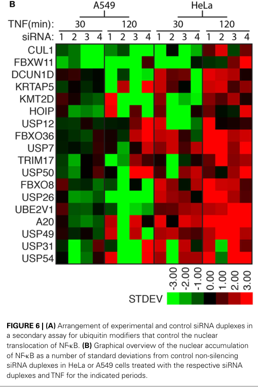

FBXO36 (F-box only protein 36) is a small (188 aa) F-box protein that serves as a substrate-recognition component of an SCF (SKP1-CUL1-F-box protein)-type E3 ubiquitin ligase complex (a Cullin-RING ligase 1, CRL1). It contains a single F-box domain (residues 91-137) through which it docks onto the adaptor SKP1, which in turn bridges to the scaffold CUL1; the catalytic RING subunit RBX1 recruits the ubiquitin-charged E2 enzyme. Within such complexes, the F-box protein contributes substrate selectivity rather than catalytic activity, directing assembly of polyubiquitin chains on bound substrates to target them for proteasomal degradation. FBXO36 belongs to the "FBXO" (F-box only, lacking recognizable C-terminal substrate-binding domains such as WD40 or LRR) class and remains very poorly characterized: no endogenous substrate, catalytic context, or subcellular localization has been experimentally validated. The strongest direct functional data come from a high-content siRNA screen of ubiquitin-pathway regulators of TNF signaling, in which FBXO36 depletion increased TNF-induced nuclear NF-kappa-B accumulation, prolonged late-stage I-kappa-B and JNK phosphorylation, sensitized cells to TNF+cycloheximide apoptosis, and raised steady-state beta-catenin levels; these phenotypes were interpreted as FBXO36 being a candidate modifier of SCF-dependent (e.g. SCF-betaTrCP) ubiquitin signaling, although no direct FBXO36 substrate was established. FBXO36 has also been noted among F-box genes with testis-enriched expression and appears in lower-confidence human genetic associations (a rare-variant lipoprotein-trait signal, lung-adenocarcinoma prognosis) that require replication. It is broadly but lowly expressed and has two annotated splice isoforms.
| GO Term | Evidence | Action | Reason |
|---|---|---|---|
|
GO:0019005
SCF ubiquitin ligase complex
|
NAS
PMID:34445249 The SCF Complex Is Essential to Maintain Genome and Chromoso... |
ACCEPT |
Summary: FBXO36 is the variable F-box (substrate-recognition) subunit of an SCF (SKP1-CUL1-F-box) E3 ubiquitin ligase complex, docking onto SKP1/CUL1 via its F-box domain. This is the core localization/complex membership for an F-box protein.
Reason: Directly supported by the UniProt FUNCTION/SUBUNIT records (substrate-recognition component of SCF; interacts with SKP1 and CUL1) and by a dedicated SCF complex entry in ComplexPortal (CPX-7976, SCF E3 ubiquitin ligase complex, FBXO36 variant). Correct core complex membership.
Supporting Evidence:
file:human/FBXO36/FBXO36-uniprot.txt
Substrate-recognition component of the SCF (SKP1-CUL1-F-box protein)-type E3 ubiquitin ligase complex.
file:human/FBXO36/FBXO36-uniprot.txt
Directly interacts with SKP1 and CUL1.
|
|
GO:0031146
SCF-dependent proteasomal ubiquitin-dependent protein catabolic process
|
NAS
PMID:34445249 The SCF Complex Is Essential to Maintain Genome and Chromoso... |
ACCEPT |
Summary: As the substrate-recognition subunit of an SCF E3 ligase, FBXO36 contributes to SCF-dependent ubiquitination of substrates that targets them for proteasomal degradation. This is the core biological process for an SCF F-box protein.
Reason: Consistent with the canonical role of SCF complexes (poly-ubiquitination of substrates for proteasomal degradation, with the F-box protein determining substrate specificity) as described in the cited review and the UniProt annotation, and with the functional placement of FBXO36 as an F-box/SCF (CRL1) substrate-recognition receptor. The specific endogenous substrate(s) of FBXO36 are not yet established (Falcon-sourced literature confirms no validated substrate, though FBXO36 perturbation alters SCF-dependent TNF/NF-kappa-B signaling outputs), but membership in an SCF ligase directly entails this process.
Supporting Evidence:
file:human/FBXO36/FBXO36-uniprot.txt
Substrate-recognition component of the SCF (SKP1-CUL1-F-box protein)-type E3 ubiquitin ligase complex.
PMID:34445249
primarily modify protein substrates with poly-ubiquitin chains to target them for proteasomal degradation. These SCF complexes are distinguishable by variable F-box proteins, which determine substrate specificity.
file:human/FBXO36/FBXO36-deep-research-falcon.md
although **no endogenous FBXO36 substrate has been directly validated** in the retrieved literature
|
Q: What are the physiological substrate(s) of the FBXO36-containing SCF complex, and in which tissues or cellular contexts does FBXO36 act as the substrate receptor? Is the TNF/NF-kappa-B and beta-catenin phenotype of FBXO36 depletion due to a direct SCF(FBXO36) substrate or an indirect effect on the SCF-betaTrCP axis?
Q: Does FBXO36 substrate recognition depend on a post-translational degron (e.g. phosphodegron) on its targets, as is typical for F-box proteins, and what determines its specificity given it lacks a recognizable C-terminal substrate-binding domain?
Q: Where does FBXO36 localize, and does its testis-enriched expression reflect a specific role in spermatogenesis?
Experiment: Affinity-purify epitope-tagged FBXO36 (and an F-box-deletion mutant that cannot assemble into SCF) followed by quantitative mass spectrometry, optionally combined with proteasome/neddylation inhibition, to identify candidate substrates that accumulate specifically with the assembly-competent receptor.
Experiment: Reconstitute the FBXO36 SCF complex in vitro (SKP1-CUL1-RBX1-FBXO36 with an E1, E2, ubiquitin and ATP) and perform ubiquitination assays on candidate substrates to confirm that FBXO36 confers substrate-dependent ubiquitin-chain assembly.
Experiment: Test in TNF-responsive cells whether the NF-kappa-B/JNK/beta-catenin phenotypes of FBXO36 depletion reflect a direct SCF(FBXO36) substrate (via ubiquitin-proteomics after FBXO36 perturbation) versus an indirect effect on SCF-betaTrCP-dependent I-kappa-B/beta-catenin turnover.
The research report should be a detailed narrative explaining the function, biological processes, and localization of the gene product. Citations should be given for all claims.
You should prioritize authoritative reviews and primary scientific literature when conducting research. You can supplement
this with annotations you find in gene/protein databases, but these can be outdated or inaccurate.
We are specifically interested in the primary function of the gene - for enzymes, what reaction is catalyzed, and what is the substrate specificity? For transporters, what is the substrate? For structural proteins or adapters, what is the broader structural role? For signaling molecules, what is the role in the pathway.
We are interested in where in or outside the cell the gene product carries out its function.
We are also interested in the signaling or biochemical pathways in which the gene functions. We are less interested in broad pleiotropic effects, except where these elucidate the precise role.
Include evidence where possible. We are interested in both experimental evidence as well as inference from structure, evolution, or bioinformatic analysis. Precise studies should be prioritized over high-throughput, where available.
The research target in this report is human FBXO36 (gene symbol FBXO36, synonym FBX36), encoding F-box only protein 36, consistent with the user-provided UniProt record Q8NEA4. The available direct literature evidence retrieved here explicitly refers to FBXO36 as a member of the F-box protein family (i.e., a presumptive substrate-recognition component of an SCF-type E3 ubiquitin ligase complex) and evaluates FBXO36 perturbation in human cell lines and human cohort data; no evidence in this run indicated a different organism or a different “FBXO36” entity. (fraser2014ahighcontentrnai pages 11-12, riverosmckay2020theinfluenceof pages 3-4, riverosmckay2020theinfluenceof pages 1-2)
Domain context (from the UniProt/InterPro context provided by the user): FBXO36 contains an F-box domain (InterPro IPR001810; PFAM-class F-box-like), which typically mediates binding to SKP1 and incorporation into SCF (SKP1–CUL1–RBX1–F-box protein) ubiquitin ligase complexes. This supports the inferred molecular role of FBXO36 as a substrate-recognition adaptor that can promote ubiquitination (often proteasomal degradation) of specific target proteins, although no endogenous FBXO36 substrate has been directly validated in the retrieved literature below. (fraser2014ahighcontentrnai pages 11-12, riverosmckay2020theinfluenceof pages 8-9)
F-box proteins are generally understood as substrate receptors within SCF E3 ubiquitin ligase complexes, helping determine which proteins are ubiquitinated in response to signaling cues. In a TNF/NF-κB-focused functional screen, FBXO36 is treated as part of the ubiquitin-modifier landscape capable of altering TNF pathway outputs, consistent with this canonical adaptor concept for F-box proteins. (fraser2014ahighcontentrnai pages 9-11, fraser2014ahighcontentrnai pages 7-9)
For FBXO36 specifically, “function” currently rests on (i) domain-based inference (F-box → likely SCF adaptor) and (ii) perturbation phenotypes (siRNA depletion alters TNF signaling readouts, apoptosis; human genetics association with a lipid biomarker). The literature retrieved does not provide a definitive biochemical reaction/substrate specificity (as would be expected for enzymes), because FBXO36 is not itself the catalytic ligase; rather, it likely confers substrate specificity to an SCF complex. (fraser2014ahighcontentrnai pages 11-12, fraser2014ahighcontentrnai pages 9-11, riverosmckay2020theinfluenceof pages 3-4)
The strongest direct functional evidence retrieved for FBXO36 comes from a high-content siRNA screen for ubiquitin pathway regulators of TNF-dependent nuclear accumulation of NF-κB in human cells (Fraser et al., Frontiers in Immunology, July 2014, https://doi.org/10.3389/fimmu.2014.00322). FBXO36 was among modifiers detected at 120 min TNF in HeLa cells and validated in A549 cells using at least two non-overlapping siRNAs. (fraser2014ahighcontentrnai pages 7-9)
NF-κB nuclear localization phenotype: In secondary validation, depletion of FBXO36 increased nuclear NF-κB after 120 min TNF exposure (noted in A549 cells), consistent with FBXO36 acting as a negative regulator or timing modulator of NF-κB nuclear accumulation in that assay context. (fraser2014ahighcontentrnai pages 7-9, fraser2014ahighcontentrnai media ce70cdf7)
I-κB phosphorylation/turnover: Follow-up assays reported that FBXO36 loss did not produce “noticeable effects” on overall I-κB stability dynamics, but did cause persistent late-stage phosphorylation of I-κB (late time point context), suggesting altered TNF kinase relay signaling rather than a simple block in I-κB degradation. (fraser2014ahighcontentrnai pages 9-11, fraser2014ahighcontentrnai media c4737aa2)
JNK signaling: FBXO36 knockdown caused a “moderate, but reproducible prolonged phosphorylation of JNK” after TNF stimulation, again consistent with enhanced or prolonged signaling through the TNF kinase cascade. (fraser2014ahighcontentrnai pages 9-11, fraser2014ahighcontentrnai media 29ae2710)
TNF-induced apoptosis sensitization: In the same study, loss of FBXO36 enhanced apoptosis induced by TNF + cycloheximide (CHX) as measured by a TUNEL assay, particularly at earlier time points (reported in the figure-associated summary). (fraser2014ahighcontentrnai pages 11-12, fraser2014ahighcontentrnai media 07aba2ec)
Interpretation caveats (author perspective): The study frames FBXO36 as a candidate ubiquitin-pathway modifier of TNF outcomes; it emphasizes that NF-κB localization was measured rather than downstream transcriptional activity, and that additional validation would be needed to establish mechanism and direct targets. (fraser2014ahighcontentrnai pages 11-12)
Fraser et al. also observed that depletion of FBXO36 increased steady-state β-catenin levels. They interpreted this as supportive of a possible role as a modifier of the SCF–βTrCP axis (βTrCP is the well-established F-box substrate receptor for β-catenin and I-κB in many contexts). Importantly, this does not establish β-catenin as a direct FBXO36 substrate; rather, it suggests FBXO36 perturbation may impact components or regulation of SCF-dependent proteolysis. (fraser2014ahighcontentrnai pages 11-12)
No definitive subcellular localization for human FBXO36 (e.g., nucleus vs cytosol, membrane association, organelles) was identified in the retrieved texts. Functional phenotypes in Fraser et al. are consistent with FBXO36 acting in the intracellular signaling milieu that controls I-κB/JNK phosphorylation and NF-κB trafficking, but this remains indirect. (fraser2014ahighcontentrnai pages 9-11, fraser2014ahighcontentrnai media ce70cdf7)
A 2024 review on F-box proteins in spermatogenesis and male infertility (Xuan et al., Cell Regeneration, June 2024, https://doi.org/10.1186/s13619-024-00196-9) lists FBXO36 among F-box proteins found at the highest levels in testis, implying testis-enriched expression and potential relevance to spermatogenesis. The retrieved review pages do not provide mechanistic FBXO36 data (substrates, knockout phenotypes, infertility causality). (xuan2024theemergingand pages 7-8)
A sequencing-based metabolomics genetics study of 7,142 participants measuring 226 serum lipoproteins, lipids, and amino acids reported FBXO36 as a novel gene-trait association at a gene-level threshold of p < 2.5×10−6 (Riveros-McKay et al., PLOS Genetics, March 2020, https://doi.org/10.1371/journal.pgen.1008605). (riverosmckay2020theinfluenceof pages 1-2)
More specifically, gene-based MCAP+LoF analysis associated FBXO36 with IDL-CE% (cholesterol esters to total lipids ratio in IDL) with meta-analysis p = 1.98×10−6. The association was indicated as driven by a single variant (signal disappears after conditioning on the top variant). Variant counts reported: WES tested 5 variants (allele count 62; p = 1.62×10−5) and WGS tested 2 variants (allele count 43; p = 2.56×10−2), with one overlapping variant between WES/WGS. The paper notes this meets the standard gene-level threshold but not a more stringent multi-phenotype threshold (p < 1.32×10−7). (riverosmckay2020theinfluenceof pages 3-4, aguilera2019geneticstudiesof pages 113-116)
The authors explicitly caution that FBXO36 has no obvious prior link to lipid metabolism beyond being an F-box protein involved in ubiquitination and that replication would be needed to establish a novel link between FBXO36 and lipid traits. (riverosmckay2020theinfluenceof pages 8-9)
In a TCGA-based analysis of lung adenocarcinoma (LUAD) stratified by TP53 status and tumor mutation burden (Fu et al., Translational Cancer Research, September 2021, https://doi.org/10.21037/tcr-21-565), “good survival outcomes correlated positively with FBXO36 expression levels” in a DEG-based survival risk analysis. The retrieved text does not provide FBXO36-specific hazard ratios or effect sizes; figure fragments suggest significance but are not interpretable enough here to report a precise statistic. (fu2021aspecialprognostic pages 1-2, fu2021aspecialprognostic pages 12-12)
Open Targets aggregates disease–target evidence for FBXO36 (ENSG00000153832), reporting associations (with evidence counts of 5 in the retrieved record) including neurodegenerative disease, hypertrophic cardiomyopathy, sarcoidosis, diabetes mellitus, and MRSA infection. Example association scores reported in the retrieved record include ~0.533 (neurodegenerative disease) and ~0.294 (hypertrophic cardiomyopathy). These should be interpreted as hypothesis-generating aggregates rather than FBXO36-focused mechanistic validation. (OpenTargets Search: -FBXO36)
Direct translational applications specifically targeting FBXO36 (e.g., drugs, diagnostics, clinical trials) were not identified in the retrieved evidence.
However, the current evidence base suggests several indirect real-world uses:
- Pathway modifier hypothesis (TNF/NF-κB): FBXO36 emerged from a functional screen of TNF signaling outputs, suggesting FBXO36 could be explored as a candidate modifier of inflammatory signaling or cell death sensitivity in experimental systems. (fraser2014ahighcontentrnai pages 11-12, fraser2014ahighcontentrnai pages 9-11)
- Biomarker genetics (lipoprotein traits): Rare-variant associations with IDL lipid composition could motivate FBXO36 inclusion in gene-based panels for lipid biomarker discovery/validation studies, with the important caveat that the signal appeared single-variant-driven and needs replication. (riverosmckay2020theinfluenceof pages 3-4, riverosmckay2020theinfluenceof pages 8-9)
- Reproductive biology candidate: Testis-enriched expression noted in a 2024 review suggests a plausible role in spermatogenesis, motivating targeted functional work (e.g., testis-specific perturbation models) rather than immediate clinical deployment. (xuan2024theemergingand pages 7-8)
The most relevant 2023–2024 item retrieved that directly mentions FBXO36 is a 2024 review of F-box proteins in spermatogenesis that highlights FBXO36 among testis-highly expressed F-box genes, while explicitly reflecting the broader problem that many F-box proteins remain poorly characterized. This represents a “state-of-the-field” update rather than a new mechanism. (xuan2024theemergingand pages 7-8)
No 2023–2024 primary mechanistic studies establishing FBXO36 substrates, structural mechanisms, or cellular localization were retrieved in this run.
Based on domain inference plus perturbation phenotypes, the most conservative, evidence-aligned statement is:
FBXO36 is likely an F-box adaptor protein that can modulate SCF-dependent ubiquitin signaling, with experimental evidence that FBXO36 depletion alters TNF pathway signaling outputs (NF-κB nuclear accumulation kinetics, I-κB and JNK phosphorylation dynamics, and TNF+CHX apoptosis sensitivity) in human cell lines. (fraser2014ahighcontentrnai pages 9-11, fraser2014ahighcontentrnai pages 7-9, fraser2014ahighcontentrnai media 07aba2ec)
Given the absence of substrate identification, the next high-yield steps for functional annotation would be: (i) mapping FBXO36 interactome (SKP1/CUL1 binding; substrate capture), (ii) ubiquitin-proteomics after FBXO36 perturbation in TNF-responsive cells, and (iii) testis-focused expression and loss-of-function studies aligned with the 2024 review’s expression emphasis. These are not claims of completed work, but follow logically from the specific gaps documented above. (xuan2024theemergingand pages 7-8, fraser2014ahighcontentrnai pages 11-12)
| Evidence type | Key finding | Experimental system/cohort | Quantitative/statistical details | Source (first author year, journal) | Publication date (month/year) | URL |
|---|---|---|---|---|---|---|
| RNAi screen / functional follow-up | FBXO36 was identified as a candidate regulator of TNF-dependent NF-κB nuclear accumulation; knockdown increased nuclear NF-κB at 120 min after TNF in secondary validation, and follow-up assays suggested enhanced TNF pathway signaling rather than a clear block in I-κB degradation. | High-content siRNA screen in HeLa cells with validation in A549 cells; orthogonal assays included qPCR and Western blotting for I-κB and phospho-JNK. | Primary/validation hit at 120 min TNF; at least 2 non-overlapping siRNAs supported the phenotype; knockdown caused persistent late-stage I-κB phosphorylation and moderate prolonged JNK phosphorylation; study-wide false discovery rate reported as 0.501; one-way ANOVA used vs non-silencing controls, but no FBXO36-specific fold change reported (fraser2014ahighcontentrnai pages 9-11, fraser2014ahighcontentrnai pages 7-9). | Fraser 2014, Frontiers in Immunology | Jul 2014 | https://doi.org/10.3389/fimmu.2014.00322 |
| RNAi screen / apoptosis follow-up | Loss of FBXO36 enhanced TNF + cycloheximide-induced apoptosis, consistent with altered TNF signaling output. | HeLa cell apoptosis follow-up after siRNA depletion; TUNEL-based assay. | Increased apoptosis particularly at early time points (2 h and 4 h noted in figure summary); no gene-specific fold change or p-value reported in extracted text (fraser2014ahighcontentrnai pages 11-12, fraser2014ahighcontentrnai media ce70cdf7). | Fraser 2014, Frontiers in Immunology | Jul 2014 | https://doi.org/10.3389/fimmu.2014.00322 |
| Functional inference / pathway context | FBXO36 depletion increased steady-state β-catenin levels, which the authors interpreted as supporting a possible role as a modifier of the SCF–βTrCP E3 ligase axis and thereby a potential link to I-κB ubiquitylation/NF-κB signaling. | Cell-based siRNA depletion in the Fraser TNF-signaling study. | Qualitative effect reported; no substrate of FBXO36 was directly validated and no numerical effect size was provided (fraser2014ahighcontentrnai pages 11-12). | Fraser 2014, Frontiers in Immunology | Jul 2014 | https://doi.org/10.3389/fimmu.2014.00322 |
| Review / expression evidence | A 2024 review of F-box proteins in spermatogenesis lists FBXO36 among F-box genes expressed at high levels in testis, suggesting possible relevance to spermatogenesis, but gives no direct function, substrate, or infertility mechanism for FBXO36. | Review synthesis of F-box protein literature/expression data. | Expression-level note only; no mechanistic or statistical detail reported for FBXO36 in the extracted review text (xuan2024theemergingand pages 7-8). | Xuan 2024, Cell Regeneration | Jun 2024 | https://doi.org/10.1186/s13619-024-00196-9 |
| Genetics / metabolomics association | Rare-variant gene-based analysis linked FBXO36 to circulating lipid metabolite variation, specifically IDL-CE% (cholesterol esters to total lipids ratio in IDL), representing a putative novel link between FBXO36 and lipid metabolism. | Sequencing-based metabolomics study of 7,142 participants measuring 226 serum lipoproteins, lipids, and amino acids. | Meta-analysis p = 1.98×10^-6 for IDL-CE% in MCAP+LoF analysis; WES: 5 variants, allele count 62, p = 1.62×10^-5; WGS: 2 variants, allele count 43, p = 2.56×10^-2; signal marked as driven by a single variant after conditioning; meets standard gene-level threshold p < 2.5×10^-6 but not stricter phenotype-adjusted threshold p < 1.32×10^-7 (riverosmckay2020theinfluenceof pages 3-4, aguilera2019geneticstudiesof pages 113-116). | Riveros-McKay 2020, PLOS Genetics | Mar 2020 | https://doi.org/10.1371/journal.pgen.1008605 |
| Genetics / interpretation note | Authors explicitly noted that FBXO36 had no obvious prior link to lipid metabolism beyond being an F-box family member involved in protein ubiquitination, and that replication would be needed to establish the association. | Same 7,142-participant sequencing/metabolomics study. | Reported as a novel association at lower stringency threshold p < 2.5×10^-6; replication recommended (riverosmckay2020theinfluenceof pages 1-2, riverosmckay2020theinfluenceof pages 8-9). | Riveros-McKay 2020, PLOS Genetics | Mar 2020 | https://doi.org/10.1371/journal.pgen.1008605 |
| Cancer association / prognosis | In TP53-mutant lung adenocarcinoma, higher FBXO36 expression was reported to correlate with better survival outcome in DEG-based survival analysis. | TCGA lung adenocarcinoma dataset; 469 LUAD samples divided into TP53-wild-type and TP53-mutant groups; analyses also incorporated tumor mutation burden and immune infiltration. | Statement reported qualitatively; extracted text did not provide FBXO36-specific hazard ratio, median survival, or AUC; fragmentary figure text suggests significance at P < 0.05 but does not allow reliable extraction of a complete statistic (fu2021aspecialprognostic pages 1-2, fu2021aspecialprognostic pages 12-12). | Fu 2021, Translational Cancer Research | Sep 2021 | https://doi.org/10.21037/tcr-21-565 |
| OpenTargets association | Open Targets lists FBXO36 disease associations, but current evidence appears indirect/sparse and largely derives from aggregated genetics/functional-screen resources rather than FBXO36-focused mechanistic studies. | Open Targets platform aggregation for target ENSG00000153832 / FBXO36. | Example overall association scores: neurodegenerative disease 0.5331; hypertrophic cardiomyopathy 0.2942; sarcoidosis 0.2691; diabetes mellitus 0.1478; MRSA infection 0.1139. Evidence count shown as 5 for each listed disease in the retrieved record (OpenTargets Search: -FBXO36). | Open Targets platform entry for FBXO36 | Accessed 2026 | https://platform.opentargets.org/target/ENSG00000153832 |
| Overall evidence gap | Across the retrieved literature, no direct endogenous substrate, catalytic reaction, or definitive subcellular localization for human FBXO36 was experimentally established; current understanding is dominated by inference from its F-box domain and limited perturbation/association data. | Cross-source synthesis of available direct evidence for human FBXO36. | Evidence is sparse and mostly indirect; strongest direct functional data come from a 2014 TNF/NF-κB RNAi study, while later data are expression or association based (fraser2014ahighcontentrnai pages 11-12, xuan2024theemergingand pages 7-8, riverosmckay2020theinfluenceof pages 3-4, fu2021aspecialprognostic pages 1-2). | Cross-source synthesis | 2014-2024 | Multiple URLs above |
Table: This table compiles the most directly relevant evidence located for human FBXO36/Q8NEA4, spanning functional RNAi data, expression review evidence, human genetics/metabolomics associations, cancer prognosis associations, and Open Targets disease links. It is useful because the published literature on FBXO36 is sparse and fragmented, so the table highlights both what is known and the major evidence gaps.
The following retrieved figure panels provide visual support for the reported FBXO36 phenotypes in TNF signaling assays:
- NF-κB nuclear accumulation z-score heatmap including FBXO36 (fraser2014ahighcontentrnai media ce70cdf7)
- Persistent late-stage phospho-I-κB with FBXO36 siRNA (fraser2014ahighcontentrnai media c4737aa2)
- Prolonged phospho-JNK with FBXO36 siRNA (fraser2014ahighcontentrnai media 29ae2710)
- Increased TUNEL apoptosis signal with TNF+CHX after FBXO36 depletion (fraser2014ahighcontentrnai media 07aba2ec)
References
(fraser2014ahighcontentrnai pages 11-12): Brittany Fraser, Robert A. Maranchuk, and Edan Foley. A high-content rnai screen identifies ubiquitin modifiers that regulate tnf-dependent nuclear accumulation of nf-κb. Frontiers in Immunology, Jul 2014. URL: https://doi.org/10.3389/fimmu.2014.00322, doi:10.3389/fimmu.2014.00322. This article has 5 citations and is from a peer-reviewed journal.
(riverosmckay2020theinfluenceof pages 3-4): Fernando Riveros-Mckay, Clare Oliver-Williams, Savita Karthikeyan, Klaudia Walter, Kousik Kundu, Willem H. Ouwehand, David Roberts, Emanuele Di Angelantonio, Nicole Soranzo, John Danesh, Eleanor Wheeler, Eleftheria Zeggini, Adam S. Butterworth, and Inês Barroso. The influence of rare variants in circulating metabolic biomarkers. PLOS Genetics, 16:e1008605, Mar 2020. URL: https://doi.org/10.1371/journal.pgen.1008605, doi:10.1371/journal.pgen.1008605. This article has 19 citations and is from a domain leading peer-reviewed journal.
(riverosmckay2020theinfluenceof pages 1-2): Fernando Riveros-Mckay, Clare Oliver-Williams, Savita Karthikeyan, Klaudia Walter, Kousik Kundu, Willem H. Ouwehand, David Roberts, Emanuele Di Angelantonio, Nicole Soranzo, John Danesh, Eleanor Wheeler, Eleftheria Zeggini, Adam S. Butterworth, and Inês Barroso. The influence of rare variants in circulating metabolic biomarkers. PLOS Genetics, 16:e1008605, Mar 2020. URL: https://doi.org/10.1371/journal.pgen.1008605, doi:10.1371/journal.pgen.1008605. This article has 19 citations and is from a domain leading peer-reviewed journal.
(riverosmckay2020theinfluenceof pages 8-9): Fernando Riveros-Mckay, Clare Oliver-Williams, Savita Karthikeyan, Klaudia Walter, Kousik Kundu, Willem H. Ouwehand, David Roberts, Emanuele Di Angelantonio, Nicole Soranzo, John Danesh, Eleanor Wheeler, Eleftheria Zeggini, Adam S. Butterworth, and Inês Barroso. The influence of rare variants in circulating metabolic biomarkers. PLOS Genetics, 16:e1008605, Mar 2020. URL: https://doi.org/10.1371/journal.pgen.1008605, doi:10.1371/journal.pgen.1008605. This article has 19 citations and is from a domain leading peer-reviewed journal.
(fraser2014ahighcontentrnai pages 9-11): Brittany Fraser, Robert A. Maranchuk, and Edan Foley. A high-content rnai screen identifies ubiquitin modifiers that regulate tnf-dependent nuclear accumulation of nf-κb. Frontiers in Immunology, Jul 2014. URL: https://doi.org/10.3389/fimmu.2014.00322, doi:10.3389/fimmu.2014.00322. This article has 5 citations and is from a peer-reviewed journal.
(fraser2014ahighcontentrnai pages 7-9): Brittany Fraser, Robert A. Maranchuk, and Edan Foley. A high-content rnai screen identifies ubiquitin modifiers that regulate tnf-dependent nuclear accumulation of nf-κb. Frontiers in Immunology, Jul 2014. URL: https://doi.org/10.3389/fimmu.2014.00322, doi:10.3389/fimmu.2014.00322. This article has 5 citations and is from a peer-reviewed journal.
(fraser2014ahighcontentrnai media ce70cdf7): Brittany Fraser, Robert A. Maranchuk, and Edan Foley. A high-content rnai screen identifies ubiquitin modifiers that regulate tnf-dependent nuclear accumulation of nf-κb. Frontiers in Immunology, Jul 2014. URL: https://doi.org/10.3389/fimmu.2014.00322, doi:10.3389/fimmu.2014.00322. This article has 5 citations and is from a peer-reviewed journal.
(fraser2014ahighcontentrnai media c4737aa2): Brittany Fraser, Robert A. Maranchuk, and Edan Foley. A high-content rnai screen identifies ubiquitin modifiers that regulate tnf-dependent nuclear accumulation of nf-κb. Frontiers in Immunology, Jul 2014. URL: https://doi.org/10.3389/fimmu.2014.00322, doi:10.3389/fimmu.2014.00322. This article has 5 citations and is from a peer-reviewed journal.
(fraser2014ahighcontentrnai media 29ae2710): Brittany Fraser, Robert A. Maranchuk, and Edan Foley. A high-content rnai screen identifies ubiquitin modifiers that regulate tnf-dependent nuclear accumulation of nf-κb. Frontiers in Immunology, Jul 2014. URL: https://doi.org/10.3389/fimmu.2014.00322, doi:10.3389/fimmu.2014.00322. This article has 5 citations and is from a peer-reviewed journal.
(fraser2014ahighcontentrnai media 07aba2ec): Brittany Fraser, Robert A. Maranchuk, and Edan Foley. A high-content rnai screen identifies ubiquitin modifiers that regulate tnf-dependent nuclear accumulation of nf-κb. Frontiers in Immunology, Jul 2014. URL: https://doi.org/10.3389/fimmu.2014.00322, doi:10.3389/fimmu.2014.00322. This article has 5 citations and is from a peer-reviewed journal.
(xuan2024theemergingand pages 7-8): Zhuang Xuan, Jun Ruan, Canquan Zhou, and Zhi-ming Li. The emerging and diverse roles of f-box proteins in spermatogenesis and male infertility. Cell Regeneration, Jun 2024. URL: https://doi.org/10.1186/s13619-024-00196-9, doi:10.1186/s13619-024-00196-9. This article has 5 citations.
(aguilera2019geneticstudiesof pages 113-116): Fernando Riveros Mckay Aguilera. Genetic studies of cardiometabolic traits. ArXiv, Jul 2019. URL: https://doi.org/10.17863/cam.36670, doi:10.17863/cam.36670. This article has 0 citations.
(fu2021aspecialprognostic pages 1-2): Jing Fu, Yaonan Li, Cuidan Li, Yuyang Tong, Mengyuan Li, and Shundong Cang. A special prognostic indicator: tumor mutation burden combined with immune infiltrates in lung adenocarcinoma with tp53 mutation. Translational Cancer Research, 10:3963-3978, Sep 2021. URL: https://doi.org/10.21037/tcr-21-565, doi:10.21037/tcr-21-565. This article has 17 citations.
(fu2021aspecialprognostic pages 12-12): Jing Fu, Yaonan Li, Cuidan Li, Yuyang Tong, Mengyuan Li, and Shundong Cang. A special prognostic indicator: tumor mutation burden combined with immune infiltrates in lung adenocarcinoma with tp53 mutation. Translational Cancer Research, 10:3963-3978, Sep 2021. URL: https://doi.org/10.21037/tcr-21-565, doi:10.21037/tcr-21-565. This article has 17 citations.
(OpenTargets Search: -FBXO36): Open Targets Query (-FBXO36, 5 results). Buniello, A. et al. (2025). Open Targets Platform: facilitating therapeutic hypotheses building in drug discovery. Nucleic Acids Research.

UPS|E3 ubiquitin and UBL ligases|Cul1 substrate receptor|F-box|other ; PN-node mapping: F-box subtype/type = no_mapping (defer to parent); group "Cul1 substrate receptor" = mapped, ok_for_propagation_to_go, GO:1990756; class = context_only/too_broad (GO:0061630).This file is generated from the current PROTEOSTASIS phase-1 dossier and local gene-review artifacts. Edit the source review, PN mapping, or dossier rather than this generated note when correcting the underlying curation.
id: Q8NEA4
gene_symbol: FBXO36
product_type: PROTEIN
status: COMPLETE
taxon:
id: NCBITaxon:9606
label: Homo sapiens
description: >-
FBXO36 (F-box only protein 36) is a small (188 aa) F-box protein that serves
as a substrate-recognition component of an SCF (SKP1-CUL1-F-box protein)-type
E3 ubiquitin ligase complex (a Cullin-RING ligase 1, CRL1). It contains a
single F-box domain (residues 91-137) through which it docks onto the adaptor
SKP1, which in turn bridges to the scaffold CUL1; the catalytic RING subunit
RBX1 recruits the ubiquitin-charged E2 enzyme. Within such complexes, the
F-box protein contributes substrate selectivity rather than catalytic
activity, directing assembly of polyubiquitin chains on bound substrates to
target them for proteasomal degradation. FBXO36 belongs to the "FBXO" (F-box
only, lacking recognizable C-terminal substrate-binding domains such as WD40
or LRR) class and remains very poorly characterized: no endogenous substrate,
catalytic context, or subcellular localization has been experimentally
validated. The strongest direct functional data come from a high-content siRNA
screen of ubiquitin-pathway regulators of TNF signaling, in which FBXO36
depletion increased TNF-induced nuclear NF-kappa-B accumulation, prolonged
late-stage I-kappa-B and JNK phosphorylation, sensitized cells to
TNF+cycloheximide apoptosis, and raised steady-state beta-catenin levels; these
phenotypes were interpreted as FBXO36 being a candidate modifier of
SCF-dependent (e.g. SCF-betaTrCP) ubiquitin signaling, although no direct FBXO36
substrate was established. FBXO36 has also been noted among F-box genes with
testis-enriched expression and appears in lower-confidence human genetic
associations (a rare-variant lipoprotein-trait signal, lung-adenocarcinoma
prognosis) that require replication. It is broadly but lowly expressed and has
two annotated splice isoforms.
alternative_products:
- name: '1'
id: Q8NEA4-1
- name: '2'
id: Q8NEA4-3
sequence_note: VSP_054336
existing_annotations:
- term:
id: GO:0019005
label: SCF ubiquitin ligase complex
evidence_type: NAS
original_reference_id: PMID:34445249
qualifier: part_of
review:
summary: FBXO36 is the variable F-box (substrate-recognition) subunit of an SCF (SKP1-CUL1-F-box) E3 ubiquitin ligase complex, docking onto SKP1/CUL1 via its F-box domain. This is the core localization/complex membership for an F-box protein.
action: ACCEPT
reason: Directly supported by the UniProt FUNCTION/SUBUNIT records (substrate-recognition component of SCF; interacts with SKP1 and CUL1) and by a dedicated SCF complex entry in ComplexPortal (CPX-7976, SCF E3 ubiquitin ligase complex, FBXO36 variant). Correct core complex membership.
supported_by:
- reference_id: file:human/FBXO36/FBXO36-uniprot.txt
supporting_text: Substrate-recognition component of the SCF (SKP1-CUL1-F-box protein)-type E3 ubiquitin ligase complex.
- reference_id: file:human/FBXO36/FBXO36-uniprot.txt
supporting_text: 'Directly interacts with SKP1 and CUL1.'
- term:
id: GO:0031146
label: SCF-dependent proteasomal ubiquitin-dependent protein catabolic process
evidence_type: NAS
original_reference_id: PMID:34445249
qualifier: involved_in
review:
summary: As the substrate-recognition subunit of an SCF E3 ligase, FBXO36 contributes to SCF-dependent ubiquitination of substrates that targets them for proteasomal degradation. This is the core biological process for an SCF F-box protein.
action: ACCEPT
reason: Consistent with the canonical role of SCF complexes (poly-ubiquitination of substrates for proteasomal degradation, with the F-box protein determining substrate specificity) as described in the cited review and the UniProt annotation, and with the functional placement of FBXO36 as an F-box/SCF (CRL1) substrate-recognition receptor. The specific endogenous substrate(s) of FBXO36 are not yet established (Falcon-sourced literature confirms no validated substrate, though FBXO36 perturbation alters SCF-dependent TNF/NF-kappa-B signaling outputs), but membership in an SCF ligase directly entails this process.
supported_by:
- reference_id: file:human/FBXO36/FBXO36-uniprot.txt
supporting_text: Substrate-recognition component of the SCF (SKP1-CUL1-F-box protein)-type E3 ubiquitin ligase complex.
- reference_id: PMID:34445249
supporting_text: primarily modify protein substrates with
poly-ubiquitin chains to target them for proteasomal degradation. These SCF
complexes are distinguishable by variable F-box proteins, which determine
substrate specificity.
- reference_id: file:human/FBXO36/FBXO36-deep-research-falcon.md
supporting_text: although **no endogenous FBXO36 substrate has been directly validated** in the retrieved literature
references:
- id: PMID:34445249
title: The SCF Complex Is Essential to Maintain Genome and Chromosome Stability.
findings:
- statement: SCF complexes modify protein substrates with poly-ubiquitin chains to target them for proteasomal degradation; the variable F-box protein determines substrate specificity, but the function of most individual SCF complexes (including F-box-only proteins like FBXO36) remains largely unknown.
reference_section_type: ABSTRACT
reference_review:
relevance: MEDIUM
correctness: VERIFIED
review_notes: >-
PubMed-verified (Int J Mol Sci 2021;22(16):8544, PMC8395177). This is a
general review of SCF complex biology, not an FBXO36-specific study, and is
abstract-only in the cache (full_text_available: false). It is the NAS
reference attached by ComplexPortal to the two FBXO36 annotations and
supports the generic F-box/SCF framing (substrate specificity, proteasomal
degradation). It does not establish a specific FBXO36 substrate or biological
role; FBXO36 remains poorly characterized.
- id: file:human/FBXO36/FBXO36-uniprot.txt
title: UniProtKB entry Q8NEA4 (FBX36_HUMAN), F-box only protein 36
findings:
- statement: FBXO36 is the substrate-recognition component of an SCF (SKP1-CUL1-F-box protein)-type E3 ubiquitin ligase complex and directly interacts with SKP1 and CUL1; it carries a single F-box domain (residues 91-137).
reference_section_type: OTHER
reference_review:
relevance: HIGH
correctness: VERIFIED
review_notes: >-
Primary record for the gene. FUNCTION and SUBUNIT lines are by similarity
(ECO:0000250) but reflect the conserved, well-established F-box/SCF
architecture. ComplexPortal CPX-7976 documents the FBXO36-variant SCF complex.
- id: file:human/FBXO36/FBXO36-deep-research-falcon.md
title: Falcon deep research report for human FBXO36
findings:
- statement: FBXO36 is inferred to be an F-box substrate-recognition adaptor of an SCF/CRL1 complex, but no endogenous FBXO36 substrate has been directly validated in the literature.
supporting_text: although **no endogenous FBXO36 substrate has been directly validated** in the retrieved literature
- statement: The strongest direct functional evidence is from a TNF/NF-kappa-B RNAi screen in which FBXO36 depletion increased TNF-induced nuclear NF-kappa-B accumulation and altered I-kappa-B/JNK phosphorylation, consistent with FBXO36 modulating SCF-dependent ubiquitin signaling.
supporting_text: '**FBXO36 is likely an F-box adaptor protein that can modulate SCF-dependent ubiquitin signaling, with experimental evidence that FBXO36 depletion alters TNF pathway signaling outputs (NF-κB nuclear accumulation kinetics, I-κB and JNK phosphorylation dynamics, and TNF+CHX apoptosis sensitivity) in human cell lines.**'
- statement: FBXO36 depletion increased steady-state beta-catenin, interpreted as a possible modifier of the SCF-betaTrCP axis, but this does not establish beta-catenin as a direct FBXO36 substrate.
supporting_text: depletion of FBXO36 increased steady-state **β-catenin** levels. They interpreted this as supportive of a possible role as a modifier of the **SCF–βTrCP** axis
reference_review:
relevance: MEDIUM
correctness: UNVERIFIED
review_notes: >-
Falcon synthesis anchored on Fraser et al. 2014 (Front Immunol,
doi:10.3389/fimmu.2014.00322; TNF/NF-kappaB RNAi screen — the only direct
functional dataset), Riveros-McKay et al. 2020 (PLoS Genet,
doi:10.1371/journal.pgen.1008605; rare-variant lipid association), Fu et al.
2021 (Transl Cancer Res; LUAD prognosis), and Xuan et al. 2024 (Cell Regen,
doi:10.1186/s13619-024-00196-9; testis expression). The functional evidence is
perturbation-level and indirect; no validated substrate or localization
exists. Falcon cites author-year/DOIs not PMIDs and the papers are not in the
local cache, so these are treated as leads (UNVERIFIED) and not promoted to
new GO terms.
core_functions:
- description: Substrate-recognition (F-box) subunit of an SCF/CRL1 (SKP1-CUL1-F-box protein) E3 ubiquitin ligase complex; FBXO36 binds SKP1/CUL1 through its F-box domain and contributes substrate selectivity, directing SCF-dependent ubiquitination of substrates for proteasomal degradation. Specific endogenous substrates are not yet defined.
molecular_function:
id: GO:1990756
label: ubiquitin-like ligase-substrate adaptor activity
directly_involved_in:
- id: GO:0031146
label: SCF-dependent proteasomal ubiquitin-dependent protein catabolic process
locations:
- id: GO:0005829
label: cytosol
supported_by:
- reference_id: file:human/FBXO36/FBXO36-uniprot.txt
supporting_text: Substrate-recognition component of the SCF (SKP1-CUL1-F-box protein)-type E3 ubiquitin ligase complex.
- reference_id: file:human/FBXO36/FBXO36-uniprot.txt
supporting_text: 'Directly interacts with SKP1 and CUL1.'
proposed_new_terms: []
suggested_questions:
- question: What are the physiological substrate(s) of the FBXO36-containing SCF complex, and in which tissues or cellular contexts does FBXO36 act as the substrate receptor? Is the TNF/NF-kappa-B and beta-catenin phenotype of FBXO36 depletion due to a direct SCF(FBXO36) substrate or an indirect effect on the SCF-betaTrCP axis?
- question: Does FBXO36 substrate recognition depend on a post-translational degron (e.g. phosphodegron) on its targets, as is typical for F-box proteins, and what determines its specificity given it lacks a recognizable C-terminal substrate-binding domain?
- question: Where does FBXO36 localize, and does its testis-enriched expression reflect a specific role in spermatogenesis?
suggested_experiments:
- description: Affinity-purify epitope-tagged FBXO36 (and an F-box-deletion mutant that cannot assemble into SCF) followed by quantitative mass spectrometry, optionally combined with proteasome/neddylation inhibition, to identify candidate substrates that accumulate specifically with the assembly-competent receptor.
- description: Reconstitute the FBXO36 SCF complex in vitro (SKP1-CUL1-RBX1-FBXO36 with an E1, E2, ubiquitin and ATP) and perform ubiquitination assays on candidate substrates to confirm that FBXO36 confers substrate-dependent ubiquitin-chain assembly.
- description: Test in TNF-responsive cells whether the NF-kappa-B/JNK/beta-catenin phenotypes of FBXO36 depletion reflect a direct SCF(FBXO36) substrate (via ubiquitin-proteomics after FBXO36 perturbation) versus an indirect effect on SCF-betaTrCP-dependent I-kappa-B/beta-catenin turnover.
{kind=link}